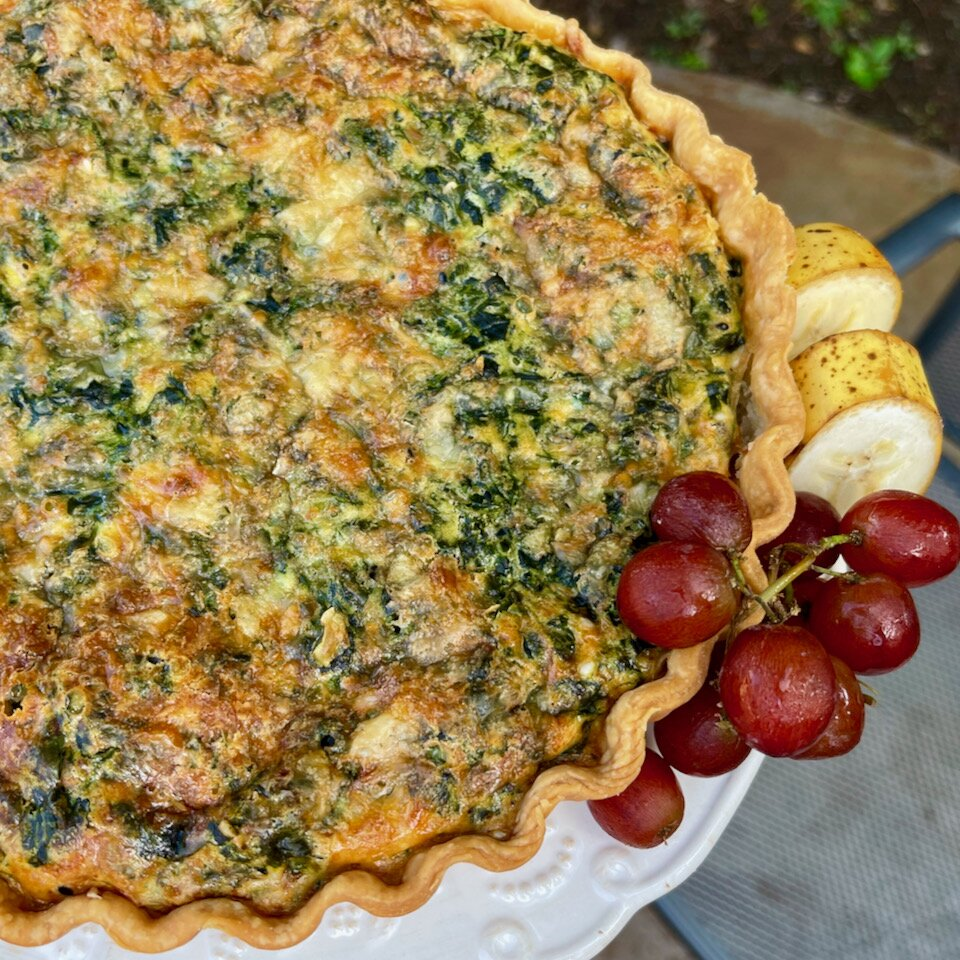

Potato, Spinach and Cheese Quiche

Description
This simple salmon recipe is a delicious, blank canvas for sauces,
toppings, and salsas to serve along with itEnjoy this quiche for
breakfast, lunch, or dinner! For breakfast, serve with a side of bacon and
some fruit or juice; for lunch, present with a salad and iced tea; or for
dinner, plate it with a side of steamed broccoli or carrots and some
crusty French bread.
Ingredients
- 1 sheet pastry dough for 9-inch tart
- 5 ounces frozen chopped spinach, thawed and drained
- 2 cups frozen hash brown potatoes, thawed
- 1 ½ cups shredded Gruyere cheese, divided
- 7 large eggs, beaten
- ½ cup heavy cream
- 2 teaspoons everything bagel seasoning
- 3 dashes hot pepper sauce (such as Tabasco®), or to taste
Steps
-
Preheat the oven to 400 degrees F (200 degrees C). Cut a 9-inch circle
of parchment paper.
-
Place pastry crust in a 9-inch quiche or pie pan, gently shaping and
stretching to fit. Prick crust with a fork several times and place
parchment circle over top. Add pie weights or dried beans on top of
parchment paper.
-
Set the pan on a baking sheet and place in the center of the preheated
oven. Reduce heat to 375 degrees F (190 degrees C) and bake about 10
minutes. Remove to a wire rack and cool for about 5 minutes. Carefully
remove pie weights or beans and parchment paper. Leave oven on.
-
While the crust is cooling, squeeze thawed spinach between several
layers of paper towels, to remove most of the moisture. Set aside.
-
Add thawed potatoes to the cooled crust. Sprinkle 1 cup shredded Gruyere
cheese on top.
-
Stir beaten eggs, cream, bagel seasoning, and hot pepper sauce in a
large bowl until ingredients are fully incorporated. Stir in spinach,
breaking up any clumps. Pour mixture over the cheese and potatoes.
Sprinkle the remaining 1/2 cup Gruyere on top.
-
Place in the center of the oven and bake until eggs are set and a knife
inserted into the middle comes out clean, 40 to 45 minutes. Remove from
the oven and cool on a rack for 10 minutes. Serve warm.
back to home